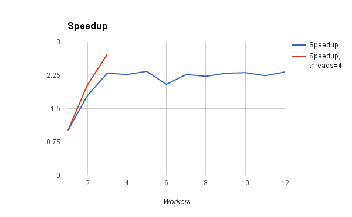

<!doctype html> <html lang="en">
<head>
  <meta charset="utf-8">

  <title>Parallelization with the AMPL API</title>

  <meta name="author" content="Victor Zverovich">

  <meta name="apple-mobile-web-app-capable" content="yes" />
  <meta name="apple-mobile-web-app-status-bar-style" content="black-translucent" />

  <meta name="viewport" content="width=device-width, initial-scale=1.0, maximum-scale=1.0, user-scalable=no">

  <link rel="stylesheet" href="../../common/reveal.js/css/reveal.css">
  <link rel="stylesheet" href="../../common/reveal.js/css/theme/beige.css" id="theme">

  <!-- For syntax highlighting -->
  <link rel="stylesheet" href="../../common/reveal.js/lib/css/zenburn.css">

  <!-- If the query includes 'print-pdf', include the PDF print sheet -->
  <script>
    if( window.location.search.match(/print-pdf/gi) ) {
      var link = document.createElement('link');
      link.rel = 'stylesheet';
      link.type = 'text/css';
      link.href = '../../common/reveal.js/css/print/pdf.css';
      document.getElementsByTagName('head')[0].appendChild(link);
    }
  </script>

  <style>
  body {background: white;}
  comment {display: none;}

  .reveal h1 {
    padding-bottom: 50px;
  }
  
  .reveal h1,
  .reveal h2 {
    font-size: 200%;
    text-transform: none;
    text-align: center;
    margin: 0;
  }
  .reveal section:first-of-type {
    text-align: center;
  }
  .reveal section {
    text-align: left;
  }
  
  .reveal p {
    margin-top: 10px;
    margin-bottom: 10px;
  }

  .reveal .MathJax_Display {
    margin-top: 20px;
    margin-bottom: 20px;
  }
  .reveal .plot {
    box-shadow: 0 0 20px #888888;
    margin-left: auto; margin-right: auto;
  }
  
  .reveal .transp-image {
    display: block;
    margin-left: auto;
    margin-right: auto;
    border: none;
    box-shadow: none;
  }
  
  /* Fix nohighlight styles. */
  .reveal pre code { display: block; background: #3F3F3F; color: #DCDCDC; }
  
  /* Fix image styles. */
  .reveal section img { border: none; box-shadow: none; }
  
  img.float-right {
    clear:right;
    float:right;
  }

  div .new { color: red; }

  /* D3 styles */
  .node circle {
    fill: #fff;
    stroke: steelblue;
    stroke-width: 1.5px;
  }

  .node {
    font: 20px sans-serif;
  }

  .link {
    fill: none;
    stroke: #ccc;
    stroke-width: 1.5px;
  }
  
  .chart rect {
    fill: steelblue;
  }

  .chart .bar text {
    fill: white;
    font: 20px sans-serif;
    text-anchor: end;
  }
  .chart .axis text {
    font: 20px sans-serif;
    fill: black;
  }
  .chart .x.axis text {
    font: 16px sans-serif;
  }

  .chart .axis path,
  .chart .axis line {
    fill: none;
    stroke: #000;
    shape-rendering: crispEdges;
  }
  .chart .y.axis line,
  .chart .y.axis path {
    display: none;
  }

  .reveal pre code { max-height: 500px; }
  </style>

  <script type="text/javascript" charset="utf-8" src="MathBox.js/vendor/domready.js"></script>
  <script type="text/javascript" charset="utf-8" src="MathBox.js/build/MathBox-bundle.js"></script>

  <link href="MathBox.js/base.css" rel="stylesheet" type="text/css" media="screen">  
</head>

<body>
<script src="../../common/reveal.js/lib/js/head.min.js"></script>
<script src="../../common/reveal.js/js/reveal.js"></script>


<div class="reveal">
<!-- Any section element inside of this container is displayed as a slide -->
<div class="slides">

<section data-markdown data-separator="---">
<script type="text/template">
Parallelization with the AMPL API
=================================

Victor Zverovich

<small><a href="mailto:viz@ampl.com">viz@ampl.com</a></small>

AMPL Optimization Inc.

<br>

<small>University of Santiago de Compostela, <br>
January 18-19, 2016, Spain</small>

---

## Outline

* Thread safety

* Example: efficient frontier

  * Parallel implementation with the C++ API
  
  * Scaling

* Asyncrhonous execution

* MATLAB parfor

* References

---

## Thread safety

* AMPL API is thread-friendly

  * no mutable global state
  
  * safe to use different AMPL objects from multiple threads
  
  * safe to read simple objects (variants, tuples) from multiple threads

* but avoid using complex AMPL objects (`AMPL`, entities) from multiple
  threads without synchronization

  * even for reading (lazy evaluation, caching)

---

## Example: efficient frontier

* A mean-variance portfolio optimization model

* Solution heuristic implemented using the AMPL C++ API

* Solve for different target returns and build efficient frontier

* Modeling and database connection is done in AMPL, application logic in C++

* New: solve problems for different target returns in parallel

---

## Efficient frontier

<div style="text-align: center;">

</div>

---

## Shared data

Used by all workers:
```c++
struct Data {
  // The last processed step index.
  int last_step;
  std::mutex mutex;

  double maxret;
  double step_size;
  std::vector<double> returns;
  std::vector<double> variances;

  Data() : last_step(0), maxret(0), step_size(0) {}
};
```

`last_step` access is synchronized, the rest is not - either read-only or guaranteed to be
changed from a single thread.

---

## Worker

```c++
class Worker {
 private:
  Data &data_;
  std::string modelDirectory_;
  bool loaded_;
  std::thread thread_;
  ampl::AMPL ampl_;

 public:
  Worker(Data &data, const char *modelDirectory)
    : data_(data), modelDirectory_(modelDirectory), loaded_(false) {
  }
  double portfolioReturn() const {
    return ampl_.getVariable("portret").value();
  }
  ampl::DataFrame averageReturns() const {
    return ampl_.getParameter("averret").getValues();
  }
  void start() { thread_ = std::thread([this]() { run(); }); }
  void join() { thread_.join(); }
  // ...
};
```

---

## Loading a problem

Load lazily in parallel:
```c++
void Worker::load() {
  if (loaded_) return;

  ampl_.setBoolOption("reset_initial_guesses", true);
  ampl_.setBoolOption("send_statuses", false);
  ampl_.setOption("solver", "cplex");

  // Load the AMPL model.
  ampl_.read(modelDirectory_ + "/qpmv.mod");

  // Read data.
  ampl_.read(modelDirectory_ + "/qpmvbit.run");
  ampl_.getParameter("data_dir").set(modelDirectory_);
  ampl_.readTable("assetstable");
  ampl_.readTable("astrets");

  loaded_ = true;
}
```

---

## Solving a relaxation

Called during initialization to calibrate the efficient frontier range:
```
void Worker::solveRelaxation() {
  load();
  // Relax the integrality
  ampl_.setBoolOption("relax_integrality", true);
  // Solve the problem
  ampl_.solve();
}
```

Not parallelized.

---

## Main worker loop

```c++
void Worker::run() {
  for (;;) {
    auto step = 0;
    {
      std::lock_guard<std::mutex> guard(data_.mutex);
      if (data_.last_step == 0)
        return;  // No more steps to process.
      step = --data_.last_step;
    }
    load();
    ampl::Parameter targetReturn = ampl_.getParameter("targetret");
    ampl::Objective variance = ampl_.getObjective("cst");
    fmt::print("Solving for return = {}\n",
                data_.maxret - (step - 1) * data_.step_size);
    // Set target return to the desired point
    targetReturn.set(data_.maxret - (step - 1) * data_.step_size);
    ampl_.eval("let stockopall:={};let stockrun:=stockall;");
    // Relax integrality
    ampl_.setBoolOption("relax_integrality", true);
    ampl_.solve();
    fmt::print("QP result = {}\n", variance.value());
    // Adjust included stocks
    ampl_.eval("let stockrun:={i in stockrun:weights[i]>0};");
    ampl_.eval("let stockopall:={i in stockrun:weights[i]>0.5};");
    // Set integrality back
    ampl_.setBoolOption("relax_integrality", false);
    ampl_.solve();
    fmt::print("QMIP result = {}\n", variance.value());
    // Store data of corrent frontier point
    data_.returns[step] = data_.maxret - (step - 1) * data_.step_size;
    data_.variances[step] = variance.value();
  }
}
```

---

## Initialization

Create workers with shared data (to be populated later):

```c++
int main(int argc, char **argv) {
  const char *modelDirectory = argv[1];
  unsigned num_workers = std::atoi(argv[2]);
  Data data;
  std::vector<std::unique_ptr<Worker>> workers;
  for (unsigned i = 0; i < num_workers; ++i) {
     workers.push_back(std::unique_ptr<Worker>(
                         new Worker(data, modelDirectory)));
  }
```

---

## Calibrate and populate data

The model loaded for calibration is reused later for the worker 0:

```c++
workers[0]->solveRelaxation();

// Number of steps of the efficient frontier
auto num_steps = 20;

// Calibrate the efficient frontier range
double minret = workers[0]->portfolioReturn();
ampl::DataFrame values = workers[0]->averageReturns();
ampl::DataFrame::Column col = values.getColumn("averret");
data.maxret = std::max_element(col.begin(), col.end())->dbl();
data.step_size = (data.maxret - minret) / num_steps;
data.last_step = num_steps;
data.returns.resize(num_steps);
data.variances.resize(num_steps);
```

---

## Solution and output

Solve problems in parallel:

```
// Start all workers.
std::for_each(workers.begin(), workers.end(),
              [] (std::unique_ptr<Worker> &w) { w->start(); });

// Wait for workers to complete.
std::for_each(workers.begin(), workers.end(),
              [] (std::unique_ptr<Worker> &w) { w->join(); });
```

Display the output:
```
// Display efficient frontier points
fmt::print("RETURN    VARIANCE\n");
for (int i = 0; i < num_steps; i++)
  fmt::print("{:<6}  {:<6}\n", data.returns[i], data.variances[i]);
```

---

## Results

1 worker:
```cs
> time -p ./examples ../../test/models/qpmv 1
...
0.00722196  0.000136804
0.00629758  0.000122576
0.00537321  0.000109795
real 2.85
user 6.65
sys 0.38
```

4 workers (on a 4-core machine):
```cs
> time -p ./examples ../../test/models/qpmv 4
...
0.00722196  0.000136804
0.00629758  0.000122576
0.00537321  0.000109795
real 2.71
user 8.98
sys 0.46
```

---

## Results


Why are the timings nearly the same?

---

## Disable solver parallelization

```c++
ampl_.setOption("cplex_options", "threads=1");
```

1 worker:
```cs
> time -p ./examples ../../test/models/qpmv 1
...
0.00722196  0.000136804
0.00629758  0.000122576
0.00537321  0.000109795
real 4.70
user 4.48
sys 0.24
```

4 workers (on a 4-core machine) ~75% improvement:
```cs
> time -p ./examples ../../test/models/qpmv 4
...
0.00722196  0.000136804
0.00629758  0.000122576
0.00537321  0.000109795
real 2.68
user 6.26
sys 0.31
```

---

## Scaling
<div style="text-align: center;">
<br/>
12-core machine, CPLEX threads=1.<br/>
Max speedup ~2.3 for n=3.
</div>

---

## Can we do better?

<div style="text-align: center;">

</div>

---

## Scaling revisited
<div style="text-align: center;">
<br/>
12-core machine, CPLEX threads=4.<br/>
Max speedup ~2.7 for n=3.
</div>

---

## Observations

* Simple approach for solving problems in parallel: thread pool with one AMPL object per thread

* Solver-level parallelization can be just as fast as solving problems in parallel

* Possible to take advantage of both if many cores (8 - 12 are becoming common)

---

## Asynchronous execution

* Methods:

  * `AMPL::readAsync(fmt::CStringRef filename, Runnable *cb)`

  * `AMPL::evalAsync(fmt::CStringRef ampl_code, Runnable *cb)`

  * `AMPL::solveAsync(Runnable *cb)`

* Return immediately, `Runnable` is invoked when completed

* Asynchronous != parallel: calling async method before another finished will fail

---

## Runnable

* Simple interface used for notifying about async operation completion

* Callback-like: data can be stored as members

* Inspired by `java.lang.Runnable`. Once C++11 is adopted can be migrated to `std::future`.

```c++
class Runnable {
public:
  virtual ~Runnable() {}
  /**
  * Function called when the execution of the async operation
  * is finished
  */
  virtual void run() = 0;
};
```

---

## Async example

```c++
std::condition_variable isdone_cv;
std::mutex isdone_mutex;
bool isdone = false;
struct SolveComplete : ampl::Runnable {
  void run() {
    std::cout << "Solved. Notifying waiting thread.\n";
    {
      std::lock_guard<std::mutex> lk(isdone_mutex);
      isdone = true;
    }
    isdone_cv.notify_all();
  }
};

ampl::AMPL ampl;
ampl.read("qpmv.run");
SolveComplete complete;
ampl.solveAsync(&complete);
// Wait for the solution process to complete.
std::unique_lock<std::mutex> lk(isdone_mutex);
isdone_cv.wait(lk, []{ return isdone; });
std::cout << "Cost: " << ampl.getValue("cst").dbl() << "\n";
```
---

## MATLAB

Multiple problems can be solved in parallel using `parfor`

```matlab
models = [1 2 3]
parfor i = 1:1:3
    setUp
    ampl = AMPL;
    % read model
    ampl.read(strcat('model', int2str(models(i)), '.mod'));
    % solve
    ampl.setOption('solver', 'cplex');
    ampl.solve;
    % handle solution
    ampl.getObjective('o').value()
    ampl = 0;
end
```
Output:
```cs
CPLEX 12.6.3.0: optimal solution; objective 43
0 dual simplex iterations (0 in phase I)
CPLEX 12.6.3.0: optimal solution; objective 42
0 dual simplex iterations (0 in phase I)
...
```

---

## References

* AMPL API: http://ampl.com/products/api/

* C++11 thread support library: http://en.cppreference.com/w/cpp/thread

* parfor in MATLAB: http://www.mathworks.com/help/distcomp/parfor.html

* CPLEX options for AMPL:
  http://ampl.com/products/solvers/solvers-we-sell/cplex/options/

</script>
</section>

</div>
</div>

<script>
  // Full list of configuration options available here:
  // https://github.com/hakimel/reveal.js#configuration
  Reveal.initialize({
    controls: true,
    progress: true,
    history: true,
    center: true,

    theme: Reveal.getQueryHash().theme, // available themes are in /css/theme
    transition: Reveal.getQueryHash().transition || 'default', // default/cube/page/concave/zoom/linear/fade/none

    // Parallax scrolling
    // parallaxBackgroundImage: 'https://s3.amazonaws.com/hakim-static/reveal-js/reveal-parallax-1.jpg',
    // parallaxBackgroundSize: '2100px 900px',

    math: {
      mathjax: '../../common/MathJax-2.4.0/MathJax.js',
      config: 'TeX-AMS-MML_HTMLorMML'  // See http://docs.mathjax.org/en/latest/config-files.html
    },

    // Optional libraries used to extend on reveal.js
    dependencies: [
      { src: '../../common/reveal.js/lib/js/classList.js', condition: function() { return !document.body.classList; } },
      { src: '../../common/reveal.js/plugin/markdown/marked.js', condition: function() { return !!document.querySelector( '[data-markdown]' ); } },
      { src: '../../common/reveal.js/plugin/markdown/markdown.js', condition: function() { return !!document.querySelector( '[data-markdown]' ); } },
      { src: '../../common/reveal.js/plugin/highlight/highlight.js', async: true, callback: function() { hljs.initHighlightingOnLoad(); } },
      { src: '../../common/reveal.js/plugin/zoom-js/zoom.js', async: true, condition: function() { return !!document.body.classList; } },
      { src: '../../common/reveal.js/plugin/notes/notes.js', async: true, condition: function() { return !!document.body.classList; } },
      { src: '../../common/reveal.js/plugin/math/math.js', async: true }
    ]
  });
  //Reveal.addEventListener('slidechanged', function(event) {
  //  document.getElementById("logo").style.visibility = Reveal.isFirstSlide() ? 'hidden' : 'visible';
  //});
</script>

<!-- Google Analytics -->
<script type="text/javascript">
  var _gaq = _gaq || [];
  _gaq.push(['_setAccount', 'UA-20116650-1']);
  _gaq.push(['_trackPageview']);
  (function() {
    var ga = document.createElement('script'); ga.type = 'text/javascript'; ga.async = true;
    ga.src = ('https:' == document.location.protocol ? 'https://ssl' : 'http://www') + '.google-analytics.com/ga.js';
    var s = document.getElementsByTagName('script')[0]; s.parentNode.insertBefore(ga, s);
  })();
</script>
</body>
</html>
